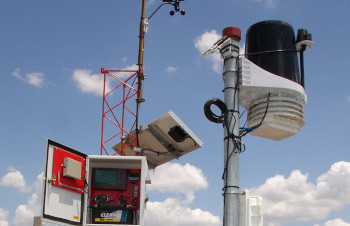
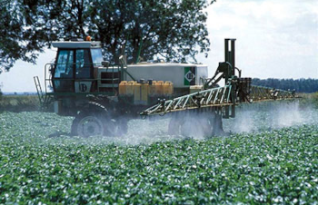
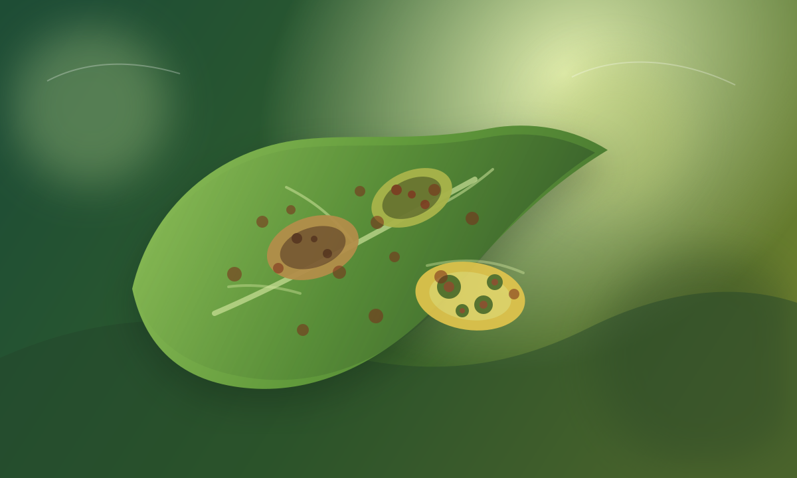

Accesos directos a monitoreo, series comparativas y tableros por localidad para lectura operativa e histórica.
Observación actualizada cada 15 minutos para seguimiento rápido de estaciones activas.

Tablas, gráficos y variables clave para analizar el comportamiento local con más profundidad.
Comparación interanual de lluvias acumuladas para leer la campaña con contexto histórico.

Mapas y tablas por localidad para evaluar ventanas operativas con mejor criterio.

Indicadores diarios por estación para evaluar escenarios predisponentes y acompañar el monitoreo fitosanitario.